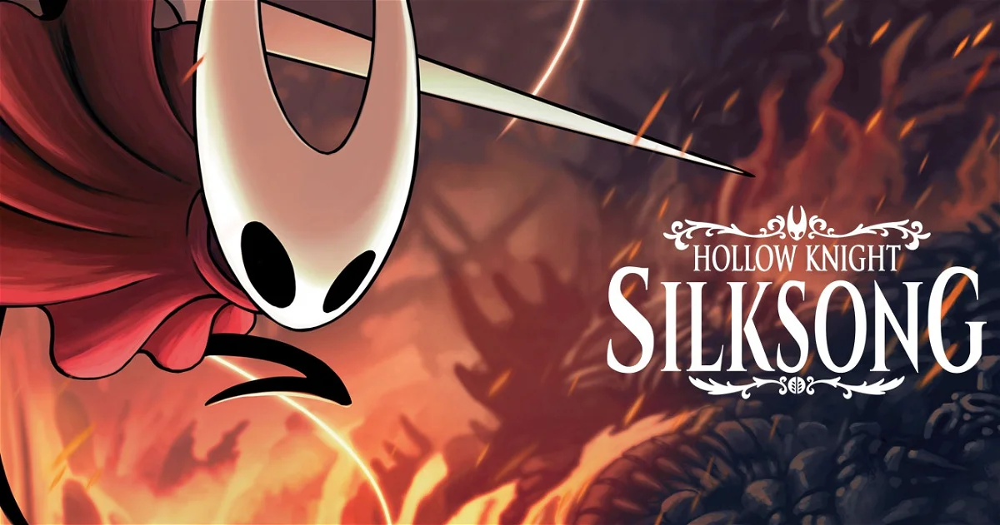

Hollow Knight
'Hollow Knight' es un juego del genero "Metroidvania" que fue lanzado desarrollado y publicado por Team Cherry. El videojuego fue inicialmente lanzado para Microsoft Windows en febrero de 2017, y más tarde para macOS y Linux en abril de 2017. La adaptación para Nintendo Switch fue lanzada el 12 de junio de 2018. El desarrollo fue parcialmente financiado como un proyecto Kickstarter que obtuvo 57 000 dólares hasta finales de 2014. El juego fue lanzado en las consolas PlayStation 4 y Xbox One el 25 de septiembre de 2018.
Contenido adicional
El gran exito del juego sumado a las promesas que hico Team Cherry, permitio la salida de nuevos dlcs que alargarian la experiencia de juego y la mejorarian añadiendo nuevas zonas jugables ademas de nuevos jefes e historias.

Ademas de estos dlcs, se prometio uno mas pero para este dlc que incluiría un nuevo personaje jugable y muchos cambios en la jugabilidad se decidio que pasase a ser una secuela directa de Hollow Knigth. De esta forma se podria invertir mucho más tiempo y esfuerzo en el desarrollo de este para poder llegar a superar a su predecesor en cuanto a contenido y jugabilidad.
Hollow Knight: Silksong
Hollow Knight: Silksong es un Metroidvania de acción y aventura en dos dimensiones, el cual tiene lugar en un reino mordaz habitado por bichos. Su jugabilidad es extensamente parecida a la de su predecesor. El jugador controla a Hornet, una criatura insectoide quién empuña una aguja para combatir enemigos.
Durante su aventura, Hornet se encuentra con muchas criaturas hostiles. Se espera que el juego contenga más de 165 enemigos diferentes. Hornet también encontrará muchos aliados en calidad de Personaje no jugador.